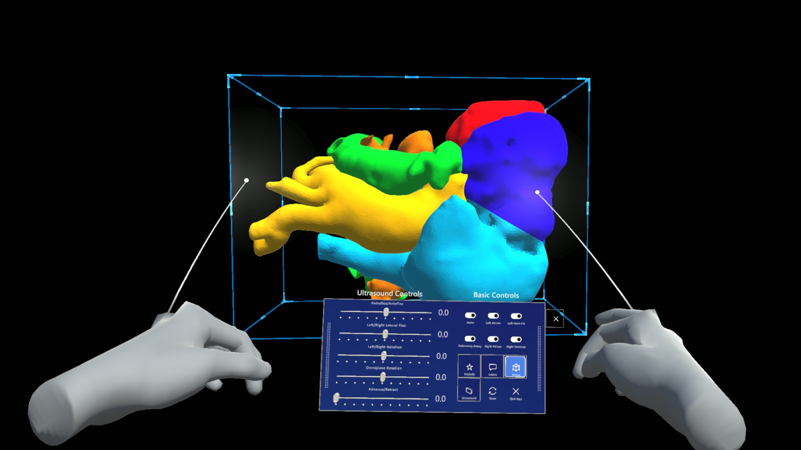
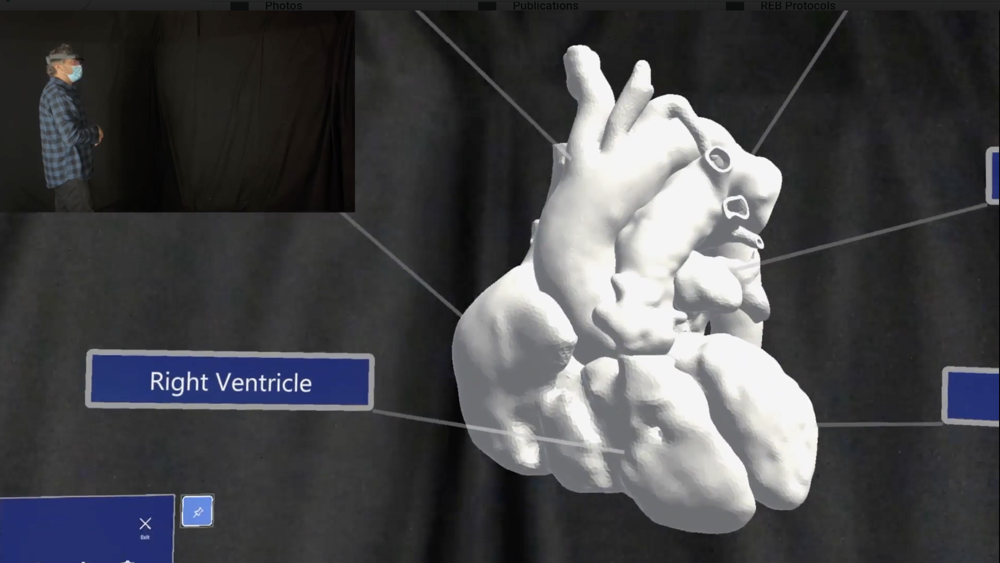
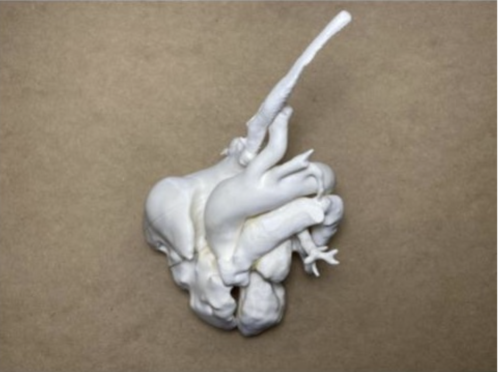
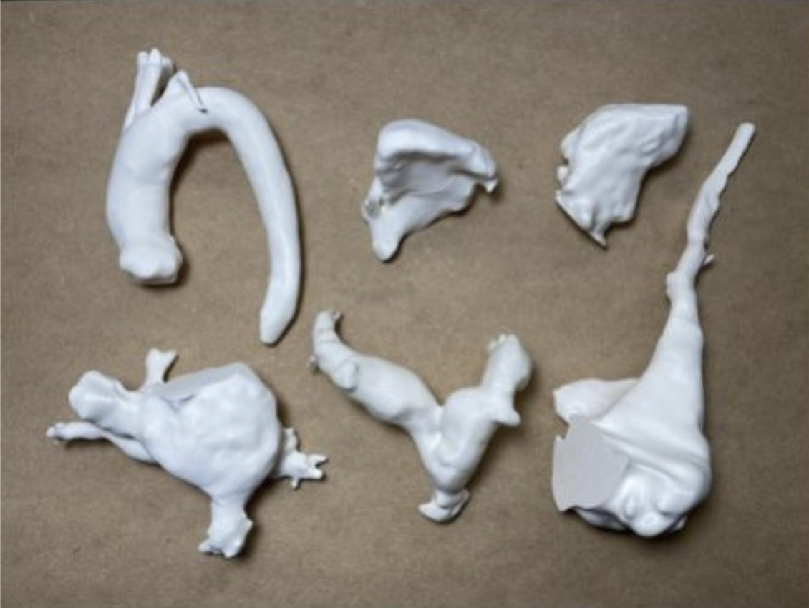

MetrA
Designing Anatomical Training Tools across Multiple Modalities
Keywords: augmented reality; virtual reality; digital media design; learning experience design
This research develops of a medical training intervention that utilizes four distinct modalities that build on the practices and processes used in anatomy training and cardiac surgery planning: an interactive screen-based 3D viewer, a 3D printed model interaction, an AR interaction, and a VR interaction.
Role and results
- Concept Development
- Interface and tangible model design
- Evaluation of efficacy of different modalities (AR, VR, 3D printed and 3D screen-based modalities)
- Co-edited the publication to TEI 2022 (Pictorial)
Implementation
As an research study, we collaborated with APIL Lab from University Health Network (UHN) to implement a prototype that enables users to control 3D anatomical model with a physical controller and AR interface through toggling modes, labeling with annotation, and slicing in different planes. We are planning out the user study at the moment.
 (Implementation in VR with rotating, slicing, assembling, dissembling, and tagging)
  (Heart models) (University Health Network, APIL Lab collaboration)
(University Health Network, APIL Lab collaboration)